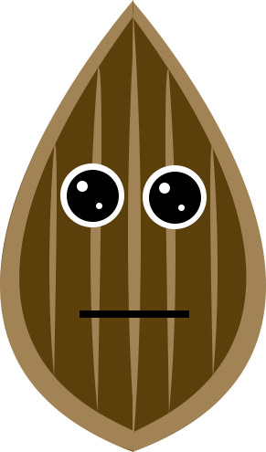

<ion-header>
  <ion-toolbar class="main-toolbar">
    <ion-title start>Green<strong>Grow</strong></ion-title>
    <ion-buttons end>
      <button ion-button icon-only color="light">
        <ion-icon ios="ios-add-outline" md="ios-add-outline"></ion-icon>
      </button>
    </ion-buttons>
  </ion-toolbar>
</ion-header>
<ion-content>
  <ion-list margin-top>

    <ion-item class="plant-container" *ngFor="let item of plants">
      <ion-thumbnail item-start>
        
        
        <ion-icon class="custom-glasses" *ngIf=" item.name == 'Acerola'"  ios="md-glasses" md="md-glasses"></ion-icon>
        <ion-icon class="custom-glasses" *ngIf=" item.name == 'Laranjinha'"  ios="ios-glasses" md="ios-glasses"></ion-icon>
      </ion-thumbnail>
      <h2 class="name">{{item.name}}</h2>

      <p class="description"><strong>Idade: </strong>{{item.idade}}</p>

      <button class="status-button water" ion-button color="light" icon-only>
        <ion-icon ios="ios-water" md="ios-water-outline"></ion-icon>
        <div class="status">
          <ion-icon *ngIf=" item.water == 1"  color="secondary" ios="ios-checkmark-outline" md="ios-checkmark-outline"></ion-icon>
          <ion-icon *ngIf=" item.water == 0"  color="danger" ios="ios-close-outline" md="ios-close-outline"></ion-icon>
        </div>
      </button>
      <button class="status-button sunny" ion-button color="light" icon-only>
        <ion-icon ios="ios-sunny-outline" md="ios-sunny-outline"></ion-icon>
        <div class="status">
          <ion-icon *ngIf=" item.sun == 1"  color="secondary" ios="ios-checkmark-outline" md="ios-checkmark-outline"></ion-icon>
          <ion-icon *ngIf=" item.sun == 0"  color="danger" ios="ios-close-outline" md="ios-close-outline"></ion-icon>
        </div>
      </button>
      <button class="status-button happy" ion-button color="light" icon-only>
        <ion-icon *ngIf=" item.happy == 1" ios="ios-happy-outline" md="ios-happy-outline"></ion-icon>
        <ion-icon *ngIf=" item.happy == 0" ios="ios-sad-outline" md="ios-sad-outline"></ion-icon>
      </button>
      <button class="status-button water" ion-button color="light" icon-only>
        <ion-icon ios="ios-beaker-outline" md="ios-beaker-outline"></ion-icon>
        <div class="status">
          <ion-icon *ngIf=" item.percentage == 1"  color="secondary" ios="ios-checkmark-outline" md="ios-checkmark-outline"></ion-icon>
          <ion-icon *ngIf=" item.percentage == 0"  color="danger" ios="ios-close-outline" md="ios-close-outline"></ion-icon>
        </div>
      </button>

      <button ion-button clear icon-only item-end (click)="changePage(tabspage)">
        <ion-icon ios="ios-log-in-outline" md="ios-log-in-outline"></ion-icon>
      </button>

    </ion-item>
  </ion-list>

</ion-content>